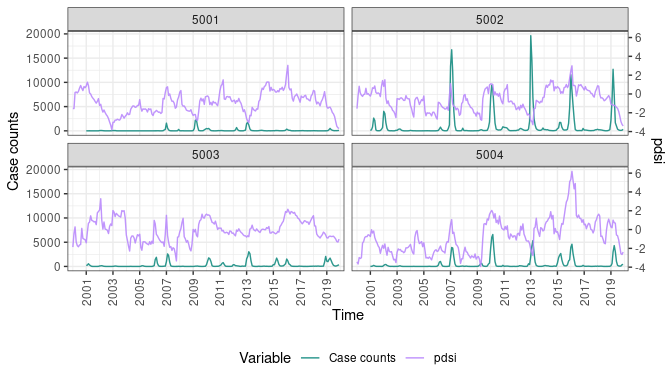

Introduction to GHRexplore


Overview
GHRexplore is an R package for exploratory analysis of temporal and spatiotemporal health data including case counts, incidence rates, and covariates. It provides commonly used visualizations and supports data transformations such as temporal and spatial aggregations. The package also offers extensive customization options for the resulting figures. The output of all functions is a ggplot2 object that can be further modified if needed.
# Load GHRexplore
library(GHRexplore)
# Other necessary libraries for the vignette
library(dplyr)
library(sf)Data requirements
The data must be a long-format data frame containing a regularly spaced time series (e.g., daily, weekly, monthly) of a single or several spatial units. In this data frame, the time and optional space identifiers must be included as columns.
As an example, we can have a look at the dengue_MS dataset included in the package, which includes data on dengue cases from the Mato Grosso do Sul state in Brazil as well as a set of relevant covariates.
data("dengue_MS")
glimpse(dengue_MS)
#> Rows: 2,640
#> Columns: 27
#> $ micro_code <dbl> 50001, 50002, 50003, 50004, 50005, 50006, 50007, 50008, 50009, 50010, 50011, 50001, 50002, 50003, 50004, …
#> $ micro_name <chr> "Baixo Pantanal", "Aquidauana", "Alto Taquari", "Campo Grande", "Cassilândia", "Paranaíba", "Três Lagoas"…
#> $ micro_name_ibge <chr> "BAIXO PANTANAL", "AQUIDAUANA", "ALTO TAQUARI", "CAMPO GRANDE", "CASSILÂNDIA", "PARANAÍBA", "TRÊS LAGOAS"…
#> $ meso_code <dbl> 5001, 5001, 5002, 5002, 5003, 5003, 5003, 5003, 5004, 5004, 5004, 5001, 5001, 5002, 5002, 5003, 5003, 500…
#> $ meso_name <chr> "Pantanais Sul Mato-Grossense", "Pantanais Sul Mato-Grossense", "Centro Norte De Mato Grosso Do Sul", "Ce…
#> $ state_code <dbl> 50, 50, 50, 50, 50, 50, 50, 50, 50, 50, 50, 50, 50, 50, 50, 50, 50, 50, 50, 50, 50, 50, 50, 50, 50, 50, 5…
#> $ state_name <chr> "Mato Grosso Do Sul", "Mato Grosso Do Sul", "Mato Grosso Do Sul", "Mato Grosso Do Sul", "Mato Grosso Do S…
#> $ region_code <dbl> 5, 5, 5, 5, 5, 5, 5, 5, 5, 5, 5, 5, 5, 5, 5, 5, 5, 5, 5, 5, 5, 5, 5, 5, 5, 5, 5, 5, 5, 5, 5, 5, 5, 5, 5, …
#> $ region_name <chr> "Centre-West", "Centre-West", "Centre-West", "Centre-West", "Centre-West", "Centre-West", "Centre-West", …
#> $ biome_code <dbl> 3, 3, 2, 2, 2, 2, 2, 2, 2, 2, 6, 3, 3, 2, 2, 2, 2, 2, 2, 2, 2, 6, 3, 3, 2, 2, 2, 2, 2, 2, 2, 2, 6, 3, 3, …
#> $ biome_name <chr> "Pantanal", "Pantanal", "Cerrado", "Cerrado", "Cerrado", "Cerrado", "Cerrado", "Cerrado", "Cerrado", "Cer…
#> $ ecozone_code <dbl> 3, 3, 2, 2, 2, 2, 2, 2, 2, 2, 8, 3, 3, 2, 2, 2, 2, 2, 2, 2, 2, 8, 3, 3, 2, 2, 2, 2, 2, 2, 2, 2, 8, 3, 3, …
#> $ ecozone_name <chr> "Pantanal", "Pantanal", "Cerrado", "Cerrado", "Cerrado", "Cerrado", "Cerrado", "Cerrado", "Cerrado", "Cer…
#> $ main_climate <chr> "AW", "AM", "AW", "AM", "AM", "AW", "AM", "AW", "AF", "CFA", "CFA", "AW", "AM", "AW", "AM", "AM", "AW", "…
#> $ month <dbl> 1, 1, 1, 1, 1, 1, 1, 1, 1, 1, 1, 2, 2, 2, 2, 2, 2, 2, 2, 2, 2, 2, 3, 3, 3, 3, 3, 3, 3, 3, 3, 3, 3, 4, 4, …
#> $ year <dbl> 2000, 2000, 2000, 2000, 2000, 2000, 2000, 2000, 2000, 2000, 2000, 2000, 2000, 2000, 2000, 2000, 2000, 200…
#> $ time <dbl> 1, 1, 1, 1, 1, 1, 1, 1, 1, 1, 1, 2, 2, 2, 2, 2, 2, 2, 2, 2, 2, 2, 3, 3, 3, 3, 3, 3, 3, 3, 3, 3, 3, 4, 4, …
#> $ dengue_cases <dbl> NA, NA, NA, NA, NA, NA, NA, NA, NA, NA, NA, NA, NA, NA, NA, NA, NA, NA, NA, NA, NA, NA, NA, NA, NA, NA, N…
#> $ population <dbl> NA, NA, NA, NA, NA, NA, NA, NA, NA, NA, NA, NA, NA, NA, NA, NA, NA, NA, NA, NA, NA, NA, NA, NA, NA, NA, N…
#> $ pop_density <dbl> NA, NA, NA, NA, NA, NA, NA, NA, NA, NA, NA, NA, NA, NA, NA, NA, NA, NA, NA, NA, NA, NA, NA, NA, NA, NA, N…
#> $ tmax <dbl> 34.28429, 33.15394, 32.31370, 31.23787, 31.19907, 32.12062, 31.67418, 31.42584, 33.35522, 31.53561, 31.59…
#> $ tmin <dbl> 24.00583, 23.43257, 22.61425, 21.82709, 21.29000, 21.85358, 22.03971, 21.71142, 23.22608, 21.63477, 21.51…
#> $ pdsi <dbl> -1.2329962, -1.8564967, -0.7201829, -2.3979688, -0.2056521, -1.5016941, -2.4826837, -3.2662439, -3.053628…
#> $ urban <dbl> 88.31, 72.36, 84.51, 94.71, 87.29, 85.58, 84.16, 78.50, 78.59, 81.81, 73.65, 88.31, 72.36, 84.51, 94.71, …
#> $ water_network <dbl> 88.78, 79.59, 84.29, 88.13, 86.48, 65.80, 83.69, 81.68, 80.51, 77.45, 76.66, 88.78, 79.59, 84.29, 88.13, …
#> $ water_shortage <dbl> 0.0000, 0.1528, 0.0437, 0.1855, 0.3201, 0.1921, 0.0524, 0.2444, 0.1247, 0.2095, 0.1419, 0.0000, 0.1528, 0…
#> $ date <date> 2000-01-01, 2000-01-01, 2000-01-01, 2000-01-01, 2000-01-01, 2000-01-01, 2000-01-01, 2000-01-01, 2000-01-…In this data frame, the date column contains the temporal identifier (in this case, we have monthly data where the variable date represents the first day of the month) and the spatial unit identifier is micro_code.
Since we have data for several spatial units, it is useful to have the polygon geometries of the areas (e.g., a geopackage, shapefile o geojson file), loaded as an sf object, in order to plot cartographic representations. The sf object must also contain the area unit identifier to be able to link the geometries with the data frame.
For the dengue_MS, the geometries are already included in the package in the map_MS object:
data("map_MS")
glimpse(map_MS)
#> Rows: 11
#> Columns: 2
#> $ code <dbl> 50001, 50002, 50003, 50004, 50005, 50006, 50007, 50008, 50009, 50010, 50011
#> $ geometry <MULTIPOLYGON [°]> MULTIPOLYGON (((-55.60618 -..., MULTIPOLYGON (((-55.39862 -..., MULTIPOLYGON (((-53.68353 -..., MULTIPOLYGON (((…In map_MS, the code variable corresponds to the micro_code area identifier in the dengue_MS object.
üí° Tip: If you don‚Äôt have geometries for your data, a good place to look for them is GADM, natural earth, or GeoBoundaries.
Covariates, case counts, and incidence rates
In all GHRexplore functions, the column name of the variable to be plotted needs to be specified with the var argument. Plotting functions behave differently depending on the type of data being plotted as defined by the type argument: covariates (type='cov'), case counts (type='counts'), and incidence rates (type='inc'). Several examples for each type are provided in the following sections.
To plot incidence rates, the column with the disease counts must be used as var and the population must be also supplied as the pop argument. By default, rates are computed per 100,000 persons, but this number can be changed using the pt argument.
Spatial and temporal aggregations
Most GHRexplore functions support temporal and spatial aggregations from finer to coarser resolution. For example, you can aggregate daily to weekly data, or aggregate small regions to larger regions.
Temporal and spatial aggregations are performed using the arguments aggregate_time and aggregate_space, respectively. For covariates (type='cov'), the aggregation function can be specified using aggregate_space_fun and aggregate_time_fun (options include mean (default), median, and sum). For case counts and incidence, the aggregation function is fixed to be the sum of cases.
Color palettes
In GHRexplore, color is controlled by the palette argument. We included a few in-house palettes that are used as defaults depending on the plot type:
GHR_palettes()
In addition to these, all color palettes included in the packages RColorBrewer and colorspace can also be used. All available options can be checked by running RColorBrewer::display.brewer.all() and colorspace::hcl_palettes(plot=TRUE).
As a few examples, the ‘Blues’ palette can be useful when plotting precipitation-related variables, ‘Greens’ when plotting vegetation-related variables, or ‘Blue-Red’ when displaying temperature. When a single color is needed, a color in colors() or a hex code can also be specified. In addition, the user can provide custom palettes using a vector of hex codes to the palette argument.
üí° Tip: Palettes can be reversed by preceding them with a minus sign, e.g. ‚Äò-IDE1‚Äô.
Plot types
Time series
plot_timeseries produces time series plots of covariates, case counts, or incidence rates. It allows for spatial and temporal aggregations, plotting single or multiple time series of different areas simultaneously (using facets or colors), y-axis transformations, and axis and title labeling.
We start by plotting the time series data for minimum temperature (note type="cov") for all the 11 areas in dengue_MS:
plot_timeseries(dengue_MS, var = "tmin", type = "cov",
var_label = "Minimum temp.",
time = "date", area = "micro_code")Since 11 areas are quite a lot for a single graph, we can use facet = TRUE to display them in different panels:
plot_timeseries(dengue_MS, var = "tmin", type = "cov", var_label = "Minimum temp.",
time = "date", area = "micro_code", facet = TRUE)Another possible strategy is to keep the 11 areas, but highlight the one we are interested in using the highlight argument by setting it to the area identifier we want to highlight:
plot_timeseries(dengue_MS, var = "tmin", type = "cov", var_label = "Minimum temp.",
time = "date", area = "micro_code", highlight = "50001",
title = "Micro code 50001")
As an alternative option, we could also aggregate to a coarser spatial unit by using an aggregation function. Here, we aggregate to meso areas using the aggregate_space argument. Since type="cov", it will aggregate temperatures using the mean as a default.
plot_timeseries(dengue_MS, var = "tmin", type = "cov", var_label = "Minimum temp.",
time = "date", area = "micro_code", aggregate_space = "meso_code")After temperature, we move on to plotting dengue counts (note type="counts") aggregating to meso areas using aggregate_space, which applies a sum function by default when type="counts". Given the right-skewed distribution of the counts, we scale the y axis using a log10(x+1) transformation:
plot_timeseries(dengue_MS, var = "dengue_cases", type = "counts",
time = "date", area = "micro_code", aggregate_space = "meso_code",
transform = "log10p1")In a similar fashion, we can also plot incidence rates (note type="inc" and the defined pop argument) aggregating to meso areas using aggregate_space, which for type="inc" it first sums the cases per area, and then computes the incidence rates. We set the scale of the incidence rate (pt argument) to 1,000 persons, and scale the y axis using a log10(x+1) transformation:
plot_timeseries(dengue_MS, var = "dengue_cases", type = "inc", pop = "population",
time = "date", area = "micro_code", aggregate_space = "meso_code",
pt = 1000, transform = "log10p1")Dual-axis time series
plot_timeseries2 produces two-axis time series plots of covariates, case counts, or incidence rates. Similarly to plot_timeseries, it allows for spatial and temporal aggregations, plotting single or multiple time series of different areas simultaneously using facets, and axis and title labeling. The main difference between the two time series functions is that, in plot_timeseries2 the arguments var, type and optionally var_label and ylab need to be of length 2, corresponding to the left and right axes respectively.
We start by plotting the time series data for two covariates (note type=c("cov", "cov")): maximum temperature and PDSI. We choose to align the two axis by forcing the mean of the two variables to be aligned:
plot_timeseries2(dengue_MS,
var = c("tmax", "pdsi"),
type = c("cov", "cov"),
time = "date",
area = "micro_code",
align = "mean")We now improve on this by performing spatial aggregation into larger meso areas and specifying custom colours and labels:
plot_timeseries2(dengue_MS,
var = c("tmax", "pdsi"),
type = c("cov", "cov"),
time = "date",
area = "micro_code",
aggregate_space = "meso_code",
palette = c("tomato", "royalblue"),
var_label = c("Maximum temp.", "PDSI"),
align = "mean")One of the most interesting applications of plot_timeseries2 is to visualize in the same graph disease cases and a candidate predictor. We do that in the following example, where we visualize dengue incidence and maximum temperature (note type=c("inc", "cov") and the pop argument):
plot_timeseries2(dengue_MS,
var = c("dengue_cases", "pdsi"),
type = c("inc", "cov"),
pop = "population",
time = "date",
area = "micro_code",
aggregate_space = "meso_code")Similarly, we can visualize case counts together with a covariate (note type=c("counts", "cov")).
plot_timeseries2(dengue_MS,
var = c("dengue_cases", "pdsi"),
type = c("counts", "cov"),
time = "date",
area = "micro_code",
aggregate_space = "meso_code")
Heatmap
plot_heatmap plots time series heatmaps of covariates, case counts, or incidence rates. Years are displayed on the y axis and weeks or months on the x axis. The function allows for spatial and temporal aggregations, plotting single or multiple time series for different areas simultaneously (using facets), color transformations, and axis and title labeling.
In this first example, we plot the variable (note type="cov") PDSI (Palmer Drought Severity Index) aggregated at the meso code level. We use a suitable palette for drought and we center it at zero:
plot_heatmap(dengue_MS, var = "pdsi", type = "cov", var_label = "PDSI",
time = "date", area = "micro_code",
aggregate_space = "meso_code", palette = "-Vik", centering = 0) In this second example, we plot dengue incidence rates (note type="inc" and pop arguments) at the meso code level and apply a transformation to the color gradient to have a better contrast.
plot_heatmap(dengue_MS, var = "dengue_cases", type = "inc", pop = "population",
time = "date", area = "micro_code", aggregate_space = "meso_code",
title= "Monthly Incidence", transform = "log10p1") Seasonality
plot_seasonality produces yearly time series of covariates, case counts, or incidence rates to explore seasonality patterns. Months/weeks are shown on the x axis, the magnitude of the variable on the y axis, and years are represented as colors. The function allows for spatial and temporal aggregations, plotting single or multiple time series of different areas simultaneously (using facets), axis transformations, and axis and title labeling.
In this example, we explore the seasonal patterns of minimum temperature aggregated at the meso code level.
plot_seasonality(dengue_MS, var = "tmin", var_label = "Minimum temperature",
type = "cov", time = "date", area = "micro_code",
aggregate_space = "meso_code") Map
plot_map plots choropleth maps of covariates, case counts, or incidence rates. In this function, we also need to supply the sf object containing the polygon geometries in the map argument. We can use the map_area argument to specify the column in the sf object that contains the area identifiers to be merged to the area column of the data frame specified in data.
plot_map allows for temporal aggregations (by year or across all years), color transformations, centering and binning (current options include quantiles and equal area), as well as title labeling. It can plot both numerical and categorical variables.
In this first example, we plot average urbanicity levels (note type="cov") over the entire study period while using an inverted palette:
plot_map(data = dengue_MS, var = "urban", time = "date",
type = "cov", area = "micro_code", map = map_MS,
map_area = "code", aggregate_time = "all",
var_label= "Urbanicity", palette = "-Heat")We now plot case incidence per 1,000 persons (note type="inc" and pt=1000) for every year (aggregate_time = "year") and binning into 5 categories using the quantile method (see bins and bins_method arguments).
plot_map(dengue_MS, var = "dengue_cases", type = "inc", pop = "population",
pt = 1000, time = "date", area = "micro_code",
map = map_MS, map_area = "code", aggregate_time = "year",
bins = 5, bins_method = "quantile", palette = "-Rocket") Lastly, here is one example with the categorical, time-invariant biome covariate:
plot_map(data = dengue_MS, var = "biome_name", type = "cov",
time = "date", area = "micro_code", aggregate_time = "all",
map = map_MS, map_area = "code", var_label= "Biome")Bivariate
plot_bivariate allows the visually assessment of associations between two variables. It will be a scatter plot if both variables are numeric and box plots if one of them is categorical. Options for customization include grouping by a variable using color or facets (area argument) and axis and title labeling.
In this first example, we explore the relationship between maximum temperature and drought while grouping by meso code:
plot_bivariate(dengue_MS,
var = c("tmax", "pdsi"),
var_label = c("Max. temp", "PDSI"),
area = "meso_code")Next, we do the same but grouping using facets with free scales:
plot_bivariate(dengue_MS,
var = c("tmax", "pdsi"),
var_label = c("Max. temp", "PDSI"),
area = "meso_code",
facet = TRUE, free_x_scale = TRUE, free_y_scale = TRUE)Lastly, we explore the distribution of minimum temperature and the categorical variable biome while coloring by meso code:
plot_bivariate(dengue_MS,
var = c("biome_name", "tmax"),
var_label = c("Biome", "Max. temp"),
area = "meso_code")Correlation
plot_correlation plots a correlation matrix of a set of variables. By default, Pearson correlation is computed, and circles are used to depict correlation values in the lower triangle and the diagonal of the matrix, whereas numbering is used in the upper triangle:
plot_correlation(dengue_MS,
var = c("dengue_cases","pop_density", "tmax", "tmin",
"pdsi", "urban", "water_network", "water_shortage")) In this second example, we use Spearman correlation and customize the triangles and the palette.
plot_correlation(dengue_MS, var = c("dengue_cases","pop_density", "tmax", "tmin",
"pdsi", "urban", "water_network", "water_shortage"),
method = "spearman", plot_type = c("number", "raster"),
palette = "RdBu") Custom labels for the variables can be provided using the var_label argument.
Compare
plot_compare allows the visualization of several variables in the same figure using the same GHRexplore plotting function. Possible functions include plot_timeseries, plot_heatmap, plot_seasonality and plot_map.
In plot_compare, the var, var_lab, type and palette can be vectors of the same length that refer to each of the elements to be plotted, while some other elements, like pop, pt, time, area and aggregation functions are shared. The final display of the multiple plots is automatically done via the cowplot package, and several options to arrange the figures are available (see ?plot_combine) including all arguments of cowplot::plot_grid.
In this first example, we plot the time series of PDSI and dengue incidence as a single column and combine the legends (ncol=1, combine_legend=TRUE):
plot_compare(plot_function = plot_timeseries,
data = dengue_MS,
var = c("pdsi", "dengue_cases"),
type = c("cov", "inc"),
var_lab = c("PDSI", "Dengue Incidence"),
pop = "population",
time = "date",
area = "micro_code",
aggregate_space = "meso_code",
ncol=1,
combine_legend=TRUE)In this second example, we plot heatmaps of PDSI and dengue incidence using different palettes:
plot_compare(plot_function = plot_heatmap,
data = dengue_MS,
var = c("pdsi", "dengue_cases"),
type = c("cov", "inc"),
var_lab = c("PDSI", "Incidence"),
palette = c("Purp", "Reds"),
pop = "population",
time = "date",
area = "micro_code",
aggregate_space = "meso_code",
ncol=1)